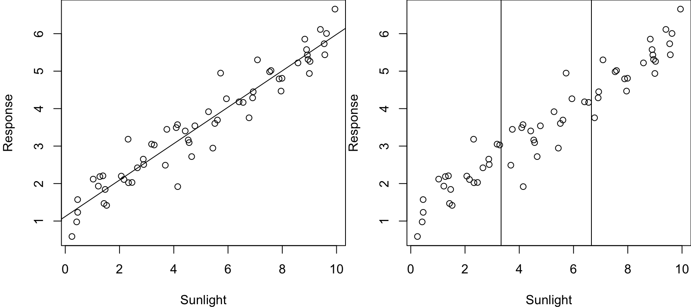
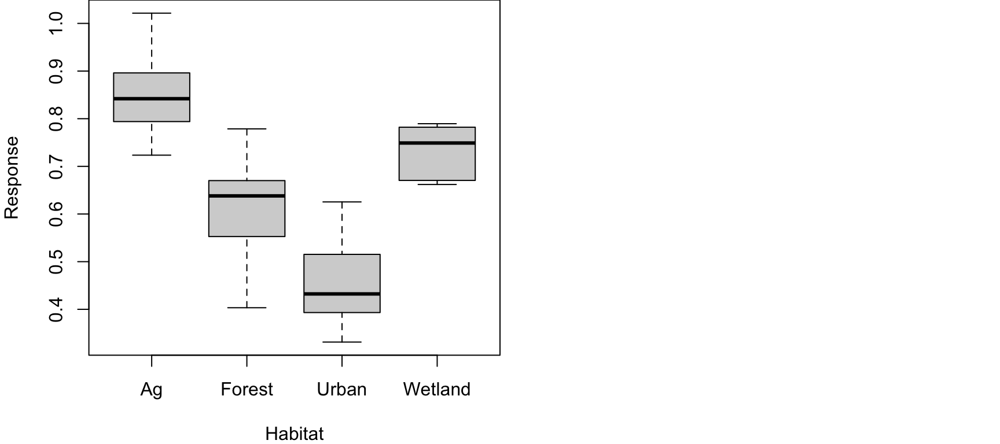
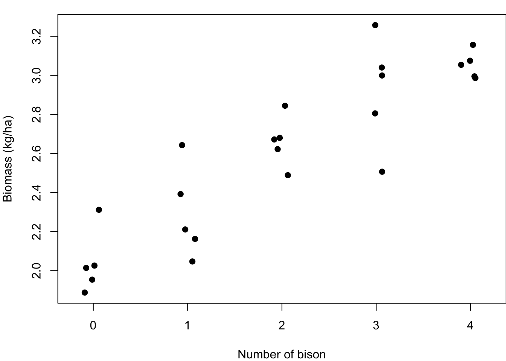
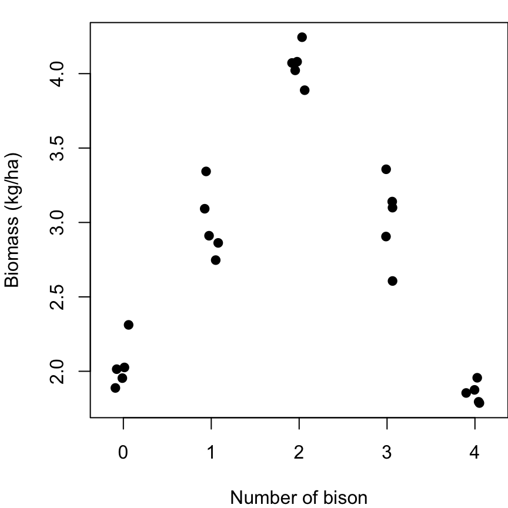
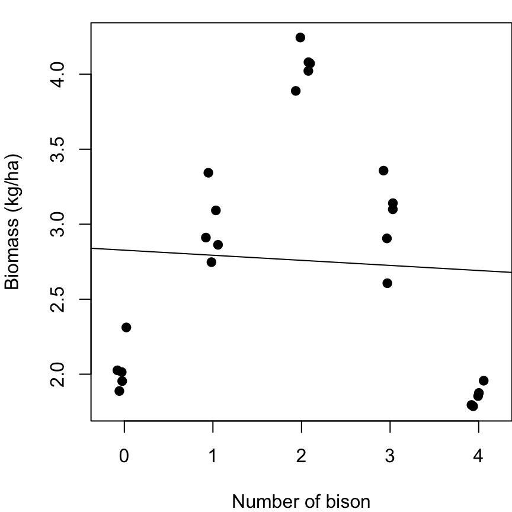
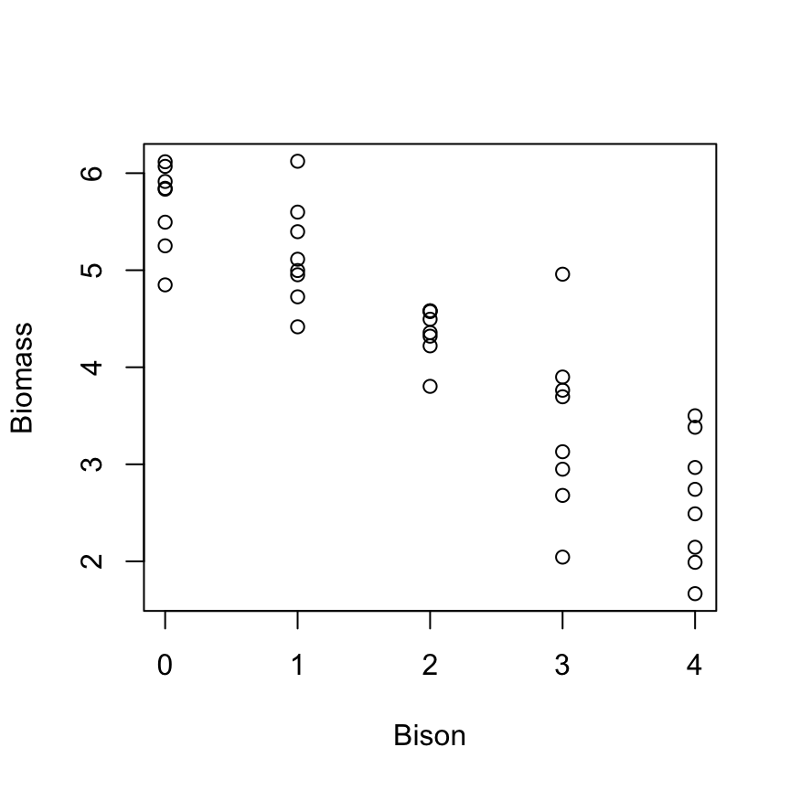
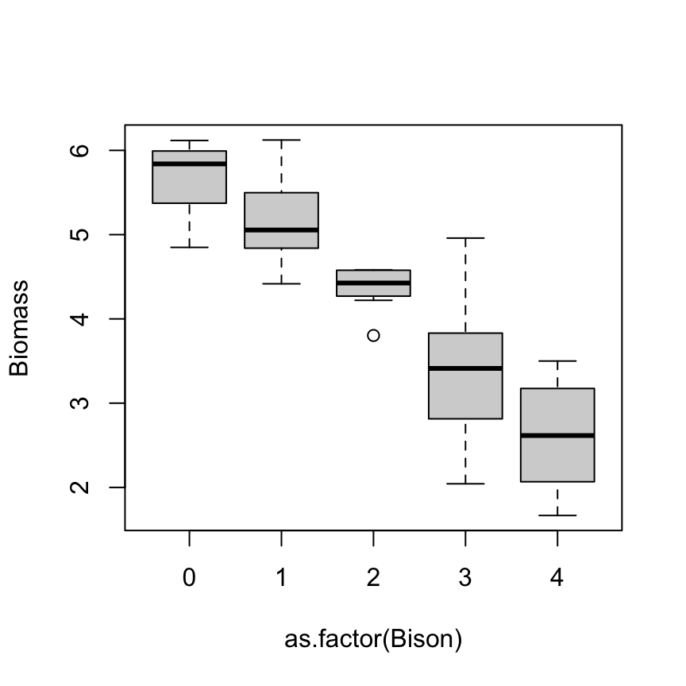
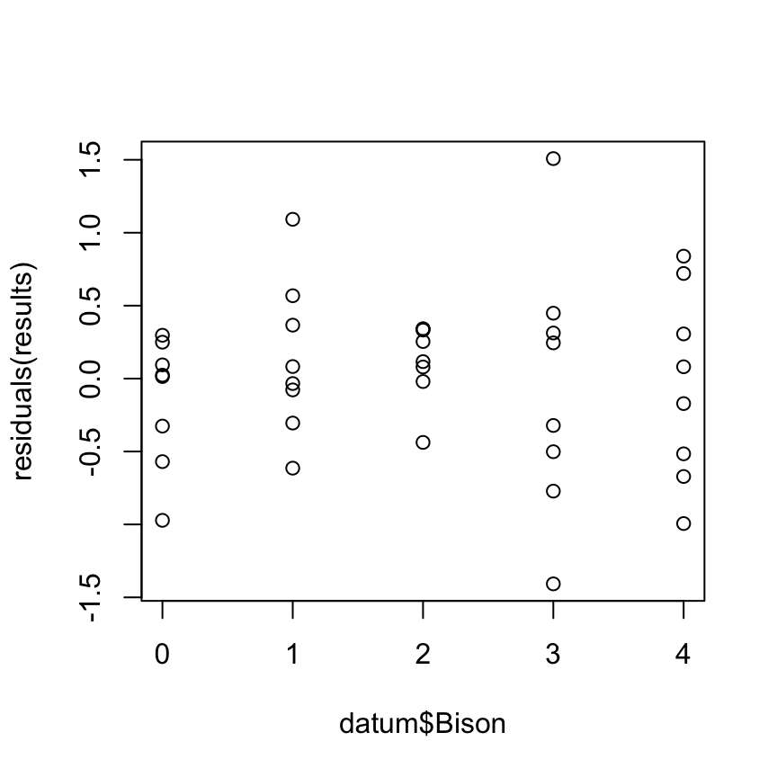
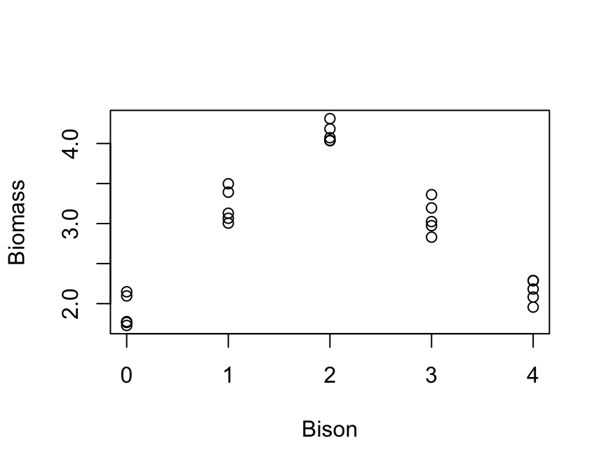

Up to this point we have been working with the linear model and we have explored situations where the X-variable is continuous or categorical. We can analyze both of those instances using ‘lm()’, and the only difference is how we report the results.
Today we are going to talk about a special case that can be useful in statistics: when you have an X-variable that can be treated as either continuous or categorical.
X-variable – categorical or continuous. Today we will discuss an example where:
This is a hypothetical example where we have a bunch of different fields where we are measuring biomass at the end of the experiment. At the start of the experiment, we put a bunch of American Bison (Bison bison) out into the field – any given field could receive between 1–5 bison. Our research question of interest is what is the effect of a large native herbivore, bison, on ecosystem productivity, which we measure with biomass?
Our X-variable is a number, so it could be treated as continuous. But also because we have multiple fields with that same number of cows in it, we could treat it as categorical.
To illustrate this, let’s consider a few examples:

Here our X-variable is definitely continuous, and the correct and most robust approach to testing for the effect of sunlight on the response variable is using linear regression (left panel).
However, some people who haven’t taken this class might be more comfortable with an ANOVA-style approach to analysis, and they may be tempted to bin their X-data to place it into ~3 groups to facilitate ANOVA (right panel). Split the continuous measure into ‘low’, ‘medium’ and ‘high’ sunlight categories. This causes you to lose a lot of information! And then it creates a more complicated and less clear analysis that provides no real advantage.
In this case, you should always treat this as continuous.
Alternatively, another example is where your X-variable is a ‘text’ variable, such as where you have categorical variable with four factors: urban, forest, ag, wetland.

For this example, the variable is words that cannot be translated into a numeric scale. You have to treat this as a categorical variable.
Let’s revisit the bison example I mentioned previously. We want to know: what is the effect of bison on ecosystem productivity?
Photo: Ted Naninga (iNaturalist)
For this example, we have a bunch of different fields where we put a bunch of American Bison (Bison bison) out into the fields, and any individual field could receive between 1–5 bison. Our data might look something like this:

We measure the biomass in replicate areas with different numbers of bison. Some call this ‘replicated regression’ (e.g., Cottingham et al. 2008). We could analyze this two ways:
Technically, this is not truly continuous, as you cannot have 1.5 bison in an area. Another X-variable, like fertilizer, could be continuous in this way. But if we ignore that technicality, these data look continuous and we could easily fit a regression line to the data.
Alternatively, we have a bunch of samples collected at each number of the X-variable. We could very easily treat this as a categorical variable – and no binning would be necessary to do so; it’s already set up as a categorical variable. So the second way to analyze these data would be as a categorical variable.
So with these two options in mind, how should we handle this variable? Continuous or categorical?
What would our linear model look like in both of these instances?
\(Y = \beta_0 + \beta_1 Bison + \epsilon \sim N(0, \sigma)\)
That’s it! Our beta is our slope; with each one bison increase, the slope tells us how much more biomass we would get.
What if we treat the X as categorical?
\(Y = \beta_0 + \beta_1 Bison1 + \beta_2 Bison2 + \beta_3 Bison3 + \beta_4 Bison4 + \epsilon \sim N(0, \sigma)\)
In this case, our betas are the differences between groups. Beta1 is the difference between 0 and 1 bison, beta2 is the difference between 0 and 2 bison, so on so forth. If we want to know the differences between other pairs, we have to change the reference.
Q: So let’s pose the question to you all: which of these approaches do you want to do? And why?
Truthfully, there is no right or wrong answer. You can do either one.
But let’s draw up a list on the board weighing the pros and cons of both options.
| Continuous X | Categorical X |
|---|---|
| Simple model - 1 beta | Complicated - 3 betas |
| No worries about inflating Type I error | Post-hoc test |
| 1 results sentence | 10 results sentences |
| Interpolation/extrapolation | No predictions |
| Assumption of linearity | No assumption of linearity |
| More power* | Less power* |
This last reason is the most important reason why you might want to use a continuous X variable. Since it only has 1 beta (effect), it will have more power! More power means you are more likely to have lower P-values and thus correctly reject the null hypothesis, when appropriate.
Why is that?
Everytime you add a beta to your model, it adds another degree of freedom to your model. This causes the model to eat up one of your samples and thus functionally decreases your sample size. And we’ve already talked at great length about how sample size influences p-values. By decreasing our sample size, we are less likely to recover a low p-value and correctly reject the null.
So, in the bison example, if you use this more complicated model, you have reduced your sample size by three. And because of that, it has less power.
Now, there is a caveat… hence the ‘asterisk’ above.
*If, and only if, the assumption of linearity is met.
If the assumption of linearity is not met, then we might have more power with the more complicated model.
What if our data looked like this:

Maybe this could happen if there was some sort of intermediate disturbance that benefited biomass production.
Q: If you ran an ANOVA, would you detect a significant difference between these categorical groups? YES
Q: If you ran a regression, would you detect a significant difference between these categorical groups? NO

This happens because the assumption of linearity is very clearly violated. There is significant variation among these data, but we are trying to fit a linear model – a straight line – to data that do not have a linear relationship.
In this case, it would be much better to consider X as a categorical variable, which will give us more Power to detect a significant relationship.
If we go back to our list, it’s pretty clear that treating X as a continuous variable is better in many ways – unless the assumption of linearity is not met. If the assumption of linearity is not met, then we:
These advantages fall apart if we don’t have linear data.
Recommendation: Always treat X-variable as continuous, unless treating as categorical ‘significantly improves the fit of the model to the data’ – which will only happen if the relationship is non-linear
This very nicely fits in with the principle of parsimony – Occam’s razor.
Occam’s razor – the world is simple, and it’s best to use simple explanations to describe the world unless there is significant evidence that more complexity is needed.
What do we mean by ‘significantly improve the fit’?
There is an idea in statistics (truism, axiom) that whenever you make a model more complex it will always improve the fit.
So given that we can always improve a fit of a curve to points by increasing the complexity of the model, we want to demonstrate that it is a significant improvement of fit. We want to show that this variable isn’t just improving fit, it is improving fit more than would be expected if the variable didn’t have any explanatory value whatsoever.
A simple way that I was taught to do this is using an ‘F-drop test’. However, there is some confusion about what this is really called and names vary widely. Some other names include:
I prefer ‘F-drop test’ because this is how I was taught and it is an easy and simple term.
No matter what you call it, you are comparing a more complex model to a more simple model to test whether that more complex model is a significant improvement to the fit in the data.
In other words, we are comparing our simple model:
\(Y = \beta_0 + \beta_1 Bison + \epsilon \sim N(0, \sigma)\)
To the complex model:
\(Y = \beta_0 + \beta_1 Bison1 + \beta_2 Bison2 + \beta_3 Bison3 + \beta_4 Bison4 + \epsilon \sim N(0, \sigma)\)
And asking ourselves: do we need these extra betas?
Another way of thinking about it is that we are testing the null hypothesis that these extra betas are all equal to zero:
\(H_0: \beta_2 + \beta_3 + \beta_4 = 0\)
You might be scratching your head and thinking: the meanings of \(\beta_1\) are different between the two models… That’s okay, the meanings of these two betas can be different. The question here is whether we need additional betas beyond that first one to improve the fit of the model.
Final thought: you will only reject the null when the more complicated model is a better fit to the data. When that happens, what does that mean about the relationship between X and Y?
Our data are significantly nonlinear! By comparing these two models, we can use this as a way to test for non-linearity.
We are talking about a continuous X variable that could also be treated as a categorical variable – either way is appropriate. Generally, the recommendation is treat it as continuous, unless it is a significant improvement in the fit of the data to treat it as categorical. We can evaluate this using an ‘F-drop’ test.
Let’s briefly examine truth. We can peak at the code I used to simulate it.
Here is the dataset(s) of interest
### Code for F-Drop tests
# Read in the data
datum <- read.csv("lecture_11_dataset1.csv")
head(datum)## Bison Biomass
## 1 0 6.117610
## 2 0 5.834632
## 3 0 5.844188
## 4 0 4.848827
## 5 0 5.914562
## 6 0 6.070139# Plot the data
plot(Biomass ~ Bison, data = datum)
# In this case, R saws numbers in the 'Bison' column and treated the variable as continuous
# Plot the data with X as a categorical variable
plot(Biomass ~ as.factor(Bison), data = datum)
# Use the as.factor function to get R to treat variable as a categorical variable
# We could have manually created categorical variable or dummy-coded variables in Excel, but
# using as.factor is much easier.
# We could also also create a new variable and save it in our 'datum'
# Run a regression, where we treat Bison as continuous
results <- lm(Biomass ~ Bison, data = datum)
summary(results)##
## Call:
## lm(formula = Biomass ~ Bison, data = datum)
##
## Residuals:
## Min 1Q Median 3Q Max
## -1.40751 -0.35372 0.08017 0.31745 1.50813
##
## Coefficients:
## Estimate Std. Error t value Pr(>|t|)
## (Intercept) 5.82066 0.15962 36.47 < 2e-16 ***
## Bison -0.78992 0.06517 -12.12 1.26e-14 ***
## ---
## Signif. codes: 0 '***' 0.001 '**' 0.01 '*' 0.05 '.' 0.1 ' ' 1
##
## Residual standard error: 0.5829 on 38 degrees of freedom
## Multiple R-squared: 0.7945, Adjusted R-squared: 0.7891
## F-statistic: 146.9 on 1 and 38 DF, p-value: 1.255e-14# Bison is continuous, because R saw numbers for that variable
# We know this because we only got 1 beta from the analysis
# Residuals plot
plot(residuals(results) ~ datum$Bison)
# Error in data appear normally distributed, etc.
# Run an ANOVA - treat Bison as categorical
results2 <- lm(Biomass ~ as.factor(Bison), data = datum)
# use the as.factor function to get R to treat 'Bison' as continuous
summary(results2)##
## Call:
## lm(formula = Biomass ~ as.factor(Bison), data = datum)
##
## Residuals:
## Min 1Q Median 3Q Max
## -1.34640 -0.42548 0.05945 0.31859 1.56923
##
## Coefficients:
## Estimate Std. Error t value Pr(>|t|)
## (Intercept) 5.6720 0.2105 26.942 < 2e-16 ***
## as.factor(Bison)1 -0.5065 0.2977 -1.701 0.097761 .
## as.factor(Bison)2 -1.3055 0.2977 -4.385 0.000101 ***
## as.factor(Bison)3 -2.2822 0.2977 -7.665 5.40e-09 ***
## as.factor(Bison)4 -3.0618 0.2977 -10.284 4.06e-12 ***
## ---
## Signif. codes: 0 '***' 0.001 '**' 0.01 '*' 0.05 '.' 0.1 ' ' 1
##
## Residual standard error: 0.5955 on 35 degrees of freedom
## Multiple R-squared: 0.8025, Adjusted R-squared: 0.7799
## F-statistic: 35.55 on 4 and 35 DF, p-value: 7.096e-12# Conduct the f-drop test
anova(results2, results)## Analysis of Variance Table
##
## Model 1: Biomass ~ as.factor(Bison)
## Model 2: Biomass ~ Bison
## Res.Df RSS Df Sum of Sq F Pr(>F)
## 1 35 12.410
## 2 38 12.909 -3 -0.49888 0.469 0.7058# The two models we have are the arguments
# Usually, you should list the more complicated model first
# Note: the two models can't have the same number of parameters
# A significant p-value means the more complex model is a significant improvement in fit
# A non-significant p-value means the simpler model is adequate
# Note: RSS (which is the same thing as SSE) is always lower in the more complex modelThe F-drop tests compares the residual sum of squares (RSS) of the two models and asks: how much does the sum of squares change when we add all those variables? Does it change a lot, such that there is a significant improvement in fit? Or did it not really decrease that much error?
In this case, it didn’t change the error that much, and the test did not recover a significant improvement in model fit by the more complex model. Therefore, the more complicated model does not significantly improve the fit to the data.
If P < 0.05, the complex model is a significant improvement (better) in fit.
If P > 0.05, the complex model is not a significant improvement in fit; the simpler model is adequate.
This does not mean the simpler model is better; it is adequate. The simpler model will never be better, as the more complex model will always be better due to the extra parameters. The question is: is the complex model significantly better, or is the simple model adequate.
As always, the limitations of p-values apply here: sample sizes, effect sizes, etc.
Now, let’s consider another scenario. What if our data really looked like the second example from above:
# Read in the data
datum <- read.csv("lecture_11_dataset2.csv")
head(datum)## Bison Biomass
## 1 0 1.764855
## 2 0 1.775757
## 3 0 1.727619
## 4 0 2.096225
## 5 0 2.148394
## 6 1 3.005565# Plot the data
plot(Biomass ~ Bison, data = datum)
We know that fitting a line to this data is not a good fit, and we also know that a categorical approach would also fit this data pretty well.
But what about an in-between approach, where we fit one line but it is non-linear?
One of the easiest ways to fit a non-linear line to your data is using a quadratic approach.
\(Y = \beta_0 + \beta_1 Bison + \beta_2 Bison^2 + \epsilon \sim N(0, \sigma)\)
Notice that this curve has the advantage of no assumption of linearity and also doesn’t use nearly as many betas as treating X as categorical. In those ways, it is a good compromise between the two options we have discussed so far.
# BONUS: How to fit a quadratic curve to data when x is continuous
# Fit a linear model
results <- lm(Biomass ~ Bison, data = datum)
#Fit a quadratic curve to data when x is continuous
results3 <- lm(Biomass ~ Bison + I(Bison^2), data = datum)
anova(results3, results)## Analysis of Variance Table
##
## Model 1: Biomass ~ Bison + I(Bison^2)
## Model 2: Biomass ~ Bison
## Res.Df RSS Df Sum of Sq F Pr(>F)
## 1 22 1.7485
## 2 23 16.5003 -1 -14.752 185.61 3.349e-12 ***
## ---
## Signif. codes: 0 '***' 0.001 '**' 0.01 '*' 0.05 '.' 0.1 ' ' 1The quadratic model is the more complicated model here, because it has more parameters than the linear model.
The quadratic model is a significant improvement in model fit compared to the simple linear model.
We can use this approach to compare any two models, as long as one model is more complicated than the other. We cannot compare models that have the same number of effects (betas).
Important point: when comparing two models, we need to make sure the datasets are exactly the same. If you use different datasets for two models, you can’t compare those two models using this approach and other approaches we will explore in the semester.
So far in this class, we have always calculated p-values the same way: by comparing a model with that variable, to one without that variable. But I haven’t explained how this works yet…
When we ran the F-drop test above, we compared two models:
Simple model: \(Y = \beta_0 + \beta_1 Bison + \epsilon \sim N(0, \sigma)\)
More complex model: \(Y = \beta_0 + \beta_1 Bison + \beta_2 Bison^2 + \epsilon \sim N(0, \sigma)\)
This test evaluates the significance of the additional quadratic beta. Is this \(\beta_2\) significantly different from zero?
We can also do an F-drop test comparing these two models:
Complex model: \(Y = \beta_0 + \beta_1 Bison + \epsilon \sim N(0, \sigma)\)
Simple model: \(Y = \beta_0 + \epsilon \sim N(0, \sigma)\)
An F-drop test evaluates whether \(\beta_1\) is significantly different from zero.
In truth, this is what the p-value from our simple linear regression analysis is evaluating!
# Read in dataset 1
datum <- read.csv("lecture_11_dataset1.csv")
# Simple linear model
results <- lm(Biomass ~ Bison, data = datum)
summary(results)##
## Call:
## lm(formula = Biomass ~ Bison, data = datum)
##
## Residuals:
## Min 1Q Median 3Q Max
## -1.40751 -0.35372 0.08017 0.31745 1.50813
##
## Coefficients:
## Estimate Std. Error t value Pr(>|t|)
## (Intercept) 5.82066 0.15962 36.47 < 2e-16 ***
## Bison -0.78992 0.06517 -12.12 1.26e-14 ***
## ---
## Signif. codes: 0 '***' 0.001 '**' 0.01 '*' 0.05 '.' 0.1 ' ' 1
##
## Residual standard error: 0.5829 on 38 degrees of freedom
## Multiple R-squared: 0.7945, Adjusted R-squared: 0.7891
## F-statistic: 146.9 on 1 and 38 DF, p-value: 1.255e-14This p-value is called a marginal p-value and is asking whether or how much that additional parameter marginally improves the fit to the data beyond the simpler model without that variable. (This is also called Type III Sum of Squares). It is essentially an F-drop test that is built into our linear model.
So, anytime you need a p-value, if R gives it to you, it is most likely giving you a marginal p-value.
Next class, we will explore more situations around this topic.
Here is code to simulate the data we analyzed in this lecture.
### Lecture 11: code to simulate data for F-drop tests
# Set the seed for reproducibility
set.seed(111)
## First dataset
# X variable
Bison <- c(rep(0, 8), rep(1, 8), rep(2, 8), rep(3, 8), rep(4, 8))
# Error
error <- rnorm(length(Bison), 0, 0.5)
# Y variable
Biomass <- 6 - 0.8*Bison + error
# Create dataframe
datum <- data.frame(Bison, Biomass)
# Save the CSV file
write.csv(datum, "lecture_11_dataset1.csv", row.names = FALSE)
## Second dataset
# X variable
n <- 25
x <- c(rep(0, 5), rep(1, 5), rep(2, 5), rep(3, 5), rep(4, 5))
# Error
error <- rnorm(n, 0, 0.2)
# Dummy code x
dummy <- data.frame(x = as.factor(x))
dummy <- data.frame(model.matrix(~ dummy$x - 1, data=dummy))
colnames(dummy) <- c("Zero", "One", "Two", "Three", "Four")
# Simulate continuous y-variable data
y <- 2 + dummy$One * 1 + dummy$Two * 2 + dummy$Three * 1 + dummy$Four * 0 + error
# Create dataframe
datum <- data.frame(Bison = x, Biomass = y)
# Save the CSV file
write.csv(datum, "lecture_11_dataset2.csv", row.names = FALSE)